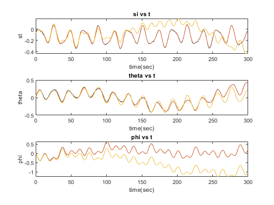
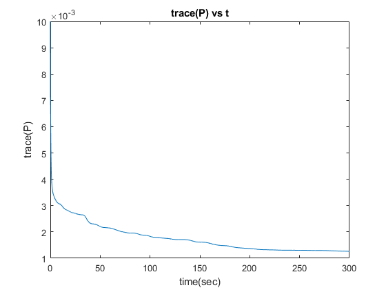
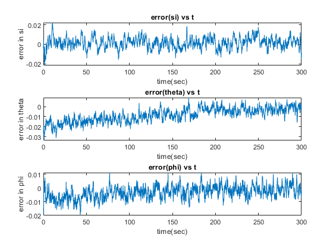

clear;
clc;
load ae5335_asg1_prob2_synthetic_data.mat
n_pts = numel(timestamps);
g = 9.81;
compass_cov = std_dev_compass^2;
accel_cov = (std_dev_accel^2)*eye(3);
R_cov = [compass_cov zeros(1,3); zeros(3,1) accel_cov];
Q_cov = (std_dev_rategyro^2)*eye(3);
P_cov = eye(10)*0.001;
si_initial = z_compass_mb(1);
theta_initial = asin(z_accelerometer_ab(1,1)/9.81);
tan_phi = z_accelerometer_ab(2,1)/z_accelerometer_ab(3,1);
phi_initial = atan(tan_phi);
x_hat = [si_initial; theta_initial; phi_initial; 0.01*randn(7, 1)];
x_int = x_hat(1:3);
x_hat_plot = [];
x_int_plot = [];
P_trace_plot = [];
x_hat_plot(:,1) = x_hat;
x_int_plot(:,1) = x_int;
P_trace_plot(:,1) = trace(P_cov);
for k = 2 : n_pts
dt = timestamps(k) - timestamps(k-1);
si = x_hat(1);
theta = x_hat(2);
phi = x_hat(3);
u_k1 = z_rategyro_rb(:,k-1);
H0 = [0 sin(phi) cos(phi);
0 cos(phi)*cos(theta) -sin(phi)*cos(theta);
cos(theta) sin(phi)*sin(theta) cos(phi)*sin(theta)];
H0 = (1/cos(theta))*H0;
u_k1_biased = u_k1 - x_hat(7:9);
x_hat_dot = [H0*u_k1_biased;zeros(7,1)];
x_hat_minus = x_hat + x_hat_dot * dt;
F0 = [...
0 (u_k1_biased(2)*sin(phi)+u_k1_biased(3)*cos(phi))*tan(theta)*sec(theta) (u_k1_biased(2)*cos(phi)-u_k1_biased(3)*sin(phi))*sec(theta);
0 0 -(u_k1_biased(2)*sin(phi)+u_k1_biased(3)*cos(phi));
0 (u_k1_biased(2)*sin(phi)+u_k1_biased(3)*cos(phi))*(sec(theta))^2 (u_k1_biased(2)*cos(phi)-u_k1_biased(3)*sin(phi))*tan(theta)];
F_k1 = eye(10) + [F0 zeros(3,3) -H0 zeros(3,1); zeros(7,10)]*dt;
G2_k1 = -[H0;zeros(7,3)]*dt;
P_minus = F_k1*P_cov*F_k1' + G2_k1*Q_cov*G2_k1';
C0 = [1 0 0;
0 g*cos(theta) 0;
0 g*sin(phi)*sin(theta) -g*cos(phi)*cos(theta);
0 g*cos(phi)*sin(theta) g*sin(phi)*cos(theta)];
temp_mat = [zeros(1,6) 1; eye(3) zeros(3,4)];
C_k1 = [C0 temp_mat];
L_k = P_minus*C_k1'/(C_k1*P_minus*C_k1' + R_cov);
z_k = [z_compass_mb(:,k);z_accelerometer_ab(:,k)];
si = x_hat_minus(1);
theta = x_hat_minus(2);
phi = x_hat_minus(3);
h_x_hat_minus = [si; g*sin(theta); -g*sin(phi)*cos(theta); -g*cos(phi)*cos(theta)] + [x_hat(10);x_hat(4:6)];
x_hat = x_hat_minus + L_k*(z_k - h_x_hat_minus);
P_cov = (eye(10) - L_k*C_k1)*P_minus;
H0_int = [0 sin(x_int(3)) cos(x_int(3));
0 cos(x_int(3))*cos(x_int(2)) -sin(x_int(3))*cos(x_int(2));
cos(x_int(2)) sin(x_int(3))*sin(x_int(2)) cos(x_int(3))*sin(x_int(2))];
H0_int = (1/cos(x_int(2)))*H0_int;
x_int_dot = H0_int*u_k1;
x_int = x_int + x_int_dot * dt;
x_hat_plot(:,k) = x_hat;
x_int_plot(:,k) = x_int;
P_trace_plot(:,k) = trace(P_cov);
end
figure;
subplot(3,1,1)
plot(timestamps,x_hat_plot(1,:))
title('si vs t')
xlabel 'time(sec)';
ylabel 'st';
hold on;
plot(timestamps,euler_angles_true(1,:));
plot (timestamps,x_int_plot(1,:))
subplot(3,1,2)
plot(timestamps,x_hat_plot(2,:))
title('theta vs t')
xlabel 'time(sec)';
ylabel 'theta';
hold on;
plot(timestamps,euler_angles_true(2,:));
plot (timestamps,x_int_plot(2,:))
subplot(3,1,3)
plot(timestamps,x_hat_plot(3,:))
title('phi vs t')
xlabel 'time(sec)';
ylabel 'phi';
hold on;
plot(timestamps,euler_angles_true(3,:));
plot (timestamps,x_int_plot(3,:))
figure;
plot(timestamps,P_trace_plot)
title('trace(P) vs t')
xlabel 'time(sec)';
ylabel 'trace(P)';
figure;
subplot(3,1,1)
plot(timestamps,(euler_angles_true(1,:)-x_hat_plot(1,:)))
title('error(si) vs t')
xlabel 'time(sec)';
ylabel 'error in si';
subplot(3,1,2)
plot(timestamps,(euler_angles_true(2,:)-x_hat_plot(2,:)))
title('error(theta) vs t')
xlabel 'time(sec)';
ylabel 'error in theta';
subplot(3,1,3)
plot(timestamps,(euler_angles_true(3,:)-x_hat_plot(3,:)))
title('error(phi) vs t')
xlabel 'time(sec)';
ylabel 'error in phi';
figure;
subplot(4,2,1)
plot(timestamps,(bias_rategyro(1)-x_hat_plot(7,:)))
title('Bias error br1 vs t')
xlabel 'time(sec)';
ylabel 'error br1';
subplot(4,2,3)
plot(timestamps,(bias_rategyro(2)-x_hat_plot(8,:)))
title('Bias error br2 vs t')
xlabel 'time(sec)';
ylabel 'error br2';
subplot(4,2,5)
plot(timestamps,(bias_rategyro(3)-x_hat_plot(9,:)))
title('Bias error br3 vs t')
xlabel 'time(sec)';
ylabel 'error br3';
subplot(4,2,2)
plot(timestamps,(bias_accel(1)-x_hat_plot(4,:)))
title('Bias error ba1 vs t')
xlabel 'time(sec)';
ylabel 'error ba1';
subplot(4,2,4)
plot(timestamps,(bias_accel(2)-x_hat_plot(5,:)))
title('Bias error ba2 vs t')
xlabel 'time(sec)';
ylabel 'error ba2';
subplot(4,2,6)
plot(timestamps,(bias_accel(3)-x_hat_plot(6,:)))
title('Bias error ba3 vs t')
xlabel 'time(sec)';
ylabel 'error ba3';
subplot(4,2,7.5)
plot(timestamps,(bias_compass-x_hat_plot(10,:)))
title('Bias error bm vs t')
xlabel 'time(sec)';
ylabel 'error bm';
  